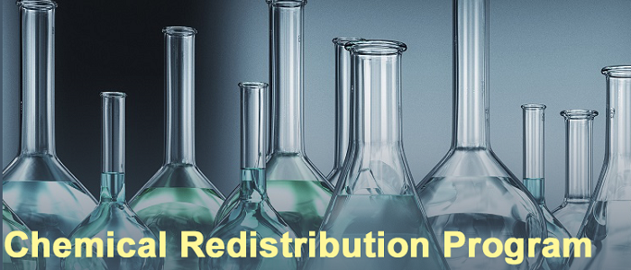

MU Pollution Prevention Initiatives
 The following programs have been designed to encourage pollution prevention at MU.
Chemical Redistribution Program
EHS moves unwanted hazardous materials of good quality to the Chemical Recycling Building. These chemicals are then made available to the campus community free of charge. A recent copy of the Chemical Recycling Inventory can be found on the EHS Web site. For more information, contact EHS at 882-3736. Note: Materials may be donated to the recycling program by listing the good unwanted hazardous material on a pick-up request form, in the EHS assistant and submitting this form to EHS. EHS will evaluate the material, and either place it in the recycling inventory or dispose of it by appropriate means.
On-line Inventory System
Registered Users are required to maintain a current inventory of chemicals used and submit the inventory annually to EHS. EHS provides an on-line inventory system to assist Registered Users in this task. The on-line inventory system can be searched to locate desired chemicals on campus, and save unnecessary purchases. Please follow this link to access the access the on-line inventory system.
Waste Minimization Incentive Award Program
MU has established a fund to assist the campus community in purchasing equipment that results in generation of less hazardous waste. Please contact EHS (882-7018) for more information about this program.
Mercury Reduction Program
Mercury is a highly toxic material and is involved in more spills than any other hazardous material on campus. Mercury has also been classified as a “persistent, bioaccumulative, and toxic material” by the Environmental Protection Agency. As a result, EHS has implemented a program to reduce the use of mercury on campus. This program involves replacing mercury-containing items, such as thermometers, manometers, mercury switches, and sphygmomanometers, with non-mercury alternatives. The campus community is strongly discouraged from buying items containing elemental mercury. Please visit the Mercury Reduction Program webpage to request funding assistance for up to 100% of the purchase cost of mercury-free replacements for mercury-containing devices.
EHS Monitoring Program
On a periodic basis, EHS monitors areas where hazardous materials are used and stored. During these visits, EHS reviews inventories of hazardous materials, and may recommend non-hazardous alternatives when available. The monitoring program also serves to encourage good housekeeping, which is an essential pollution prevention practice. Please visit the Monitoring Program webpage for additional information.
Multi-hazardous Waste
There are three types of hazards that can make a waste dangerous in the general sense of the word: biological, chemical, and radioactive. When two or more of these hazards are present in a container of waste, the waste is classified as multi-hazardous. The term “mixed waste” is often used by regulators to refer to wastes that contain both chemical and radioactive hazards. Multi-hazardous wastes are often expensive to dispose of and create significant regulatory burdens. As a result, Registered Users are encouraged to contact EHS before conducting activities that might produce multi-hazardous wastes. EHS can provide advice on alternate processes and procedures that prevent or minimize the production of multi-hazardous wastes.
Other Pollution Prevention Activities
EHS can provide additional suggestions for pollution prevention activities upon request. Contact the EHS Recycling Coordinator at 882-3736 for more information. This chapter describes training and information resources available to assist the MU community in working safely with hazardous materials.